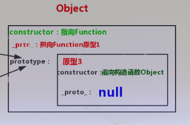
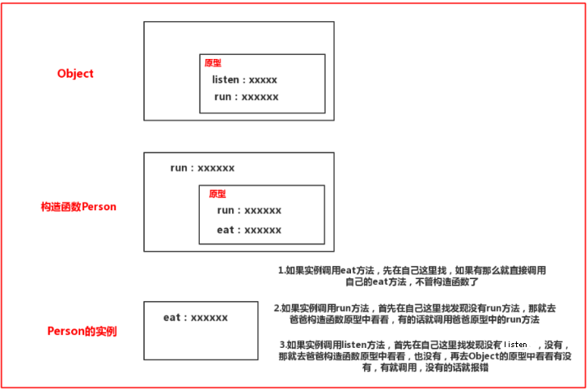

说实话js这门语言以前没有仔细研究过，现在研究起来感觉好麻烦，对于原型链这个说法我也是刚接触不久，就试着说说我的理解吧！
关于上一篇我们说了js整个函数体系结构，想了解的可以点击这里，这里随便找到一些对原型的小测试，你可以看看会不会，其中Person是一个构造函数，person1是构造函数的一个实例；
person1.__proto__ 是什么？//person1.__proto__ == Person.prototype
Person.__proto__ 是什么？//Person.__proto__ == Function.prototype
Person.prototype.__proto__ 是什么？//Person.prototype.__proto__ == Object.prototype
Object.__proto__ 是什么？//Object.__proto__ == Function.prototype
Object.prototype__proto__ 是什么？//Object.prototype__proto__ == null
知道了这些就差不多了，我们继续看；
1.特殊的Math和JSON
这两个内置对象有点不同，上次还没有注意看，因为其他的内置对象都是Function的实例，比如Date，Number等，举个例子：
Date instanceof Function //true
Date.constructor == Function //true
Date.__proto__ == Function.prototype //true
但是当我们用Math对象和JSON对象测试的时候确实false，其实可以把Math和JSON对象看作Object的实例：
//Math和JSON一样，这里以Math为例
Math instanceof Object //true
Math.constructor == Object //true
Math.__proto__ == Object.prototype //true这两个对象比较特殊，注意一下和其他的内置对象一定要分开！！！
2.继承
继承可以说是每一个面向对象语言肯定有的，因为符合我们现实的想法，子承父业嘛！如果你爸比较有钱，你继承了几个亿的家产肯定一生无忧；如果你爸是个普通人，那即使继承了家产也没有多少啊！还是要靠自己奋斗。
在js中的继承也一个样，如果一个构造函数设计得很好，那么儿子等后代就会很舒服啊！继承的话，从Object开始，下图所示，你看Object中你觉得哪个部分最重要，应该被继承下去，当然是原型啊！所以说继承就是指的是原型中的所有东西都会被继承到后代中。。。。

我们可以验证一下：
Object.prototype.say = function(){alert("你好！")};
var obj = new Object();
obj.say();//页面会有弹窗“你好！“，说明在obj实例中调用的say方法其实就是调用的是Object中原型中的say方法
//还可以用另外一个方式，就是用Math或者JSON对象也会有同样的效果
Object.prototype.say = function(){alert("你好！")};
Math.say();这个可能有点晦涩难懂，不要紧我们继续往下看！看了他们的调用机制就懂了；
3.js方法调用机制
简单测试一下,我就是分别在Object原型内外，构造函数Person原型内外，以及per实例中写了一些方法，可能很多人看着都头晕了。。。
Object.say = function(){alert("object----say")}
Object.listen = function(){alert("object----listen")}
Object.prototype.say = function(){alert("Object.prototype---say")};
Object.prototype.listen = function(){alert("Object.prototype---listen")};
var Person = new Function();
Person.say = function(){alert("Person>>>>>>say")};
Person.run = function(){alert("Person>>>>>>run")};
Person.listen = function(){alert("Person>>>>>>listen")};
Person.prototype.say = function(){alert("Person.prototype>>>>>>say")};
Person.prototype.run = function(){alert("Person.prototype>>>>>>run")};
var per = new Person();
per.say = function(){alert("per+++++++say")};
per.say(); //per+++++++say
per.listen(); //Object.prototype---listen
per.run(); //Person.prototype>>>>>>run
上面的太繁琐，没耐心看就算了，我就说说我得出的结论：原型外面的函数（也可以叫做方法）不会被继承，也就是说只要是在原型外面的函数只能自己用，不能给后代用；而对于原型里面的函数，对于后代来说是可见的，

注意：图中我为了看起来简洁，省略了一点东西，就是那么__proto__属性，为什么实例能够找到它爸爸构造函数的原型呢？就是通过这个属性，而构造函数中也有一个__proto__属性，指向Object的原型，通过这个原型的话，我们的实例就能够慢慢往上找原型，一直可以找到Object的原型，这就是所谓的原型链。。。。
所以根据这个特性，js一开始就在Object的原型中放置了一些常用的函数，所以自定义构造函数的实例一开始就可以调用一些方法，这些方法不是我们定义的，而是官方帮你先放到Object的原型中的，当然你也可以在实例或构造函数中弄个同样名字的函数，将官方那个给覆盖掉。。。。。
4.js中方法类型
我js中的方法大概分为三种（对于js这样的语言来说，没有类的概念好不爽，我们就把构造函数看作类吧。。。。）：类方法，实例方法，原型方法
那么这三种方法到底是干嘛的呢？我就随便举个例子：
var Person = function(name){
this.name = name;
this.say = function(){alert("say.....")};//实例方法
}
Person.say = function(){alert("Person say.....")}//类方法，只能通过构造函数名来调用
Person.prototype.say=function(){alert("prototype say.....")}//原型方法
var per = new Person();
per.say();//调用实例方法,注意当实例方法和原型方法同名的时候优先调用实例方法，如果实例方法没有say方法，那就会调用原型中的say方法
Person.say();//调用类方法
Person.prototype.say();//调用原型方法
5总结
怎么说呢？感觉js结构太糟糕了，看了好久才知道一个大概的轮廓，还有很多的东西没看到，比如我们知道原型其实是一个当前构造函数的实例，那么我们可不可以把其他对象的实例赋值过来呢？比如Student.prototype = new Person(),这样行吗？当然可以，这样的话可以让Student的实例访问Person的原型的方法，实现了继承。。。。
哎，有机会再来啃js吧，还有好多东西要看。。。。由于看js没多久，有什么说得有误的地方欢迎指出！